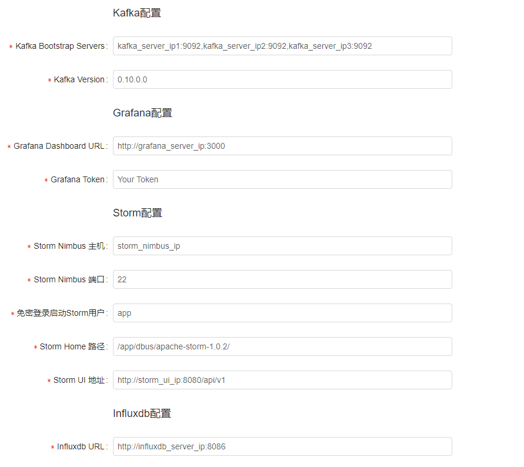

安装部署
1 安装部署说明
安装部署分为以下两种方式（注意：两种方式不可以混用）：
- All In One体验版
- 该版本安装在单机上，自动部署安装dbus所依赖的相关组件，仅用于体验dbus基本功能，不可以用于生产。
- 该版本支持mysql数据源接入体验。
- 集群部署
- 用于生产环境或测试环境部署。
- 可部署在单机上或集群上。
- 该版本包含对Oracle、mysql，logstash、filebeat、flume等数据源的支持。
2 快速体验 - All In One包部署
请参考All In One包快速安装。
3 集群部署
3.1 环境准备
3.1.1 硬件基础
Dbus集群环境最少需要三台Linux服务器，以下以三台服务器为例进行说明：
| No | IP | 域名 | 运行环境 |
|---|---|---|---|
| 1 | 192.168.0.1 | dbus-n1 | JDK1.8 |
| 2 | 192.168.0.2 | dbus-n2 | JDK1.8 |
| 3 | 192.168.0.3 | dbus-n3 | JDK1.8 |
HOST配置：修改所有服务器/etc/hosts文件设置相应的域名信息如下：
192.168.0.1 dbus-n1
192.168.0.2 dbus-n2
192.168.0.3 dbus-n3
SSH免密登录配置：配通dbus-n3到dbus-n1、dbus-n2、dbus-n3之间的SSH免密登录。
3.1.2 软件依赖
| 名称 | 版本号 | 说明 |
|---|---|---|
| Canal | v1.0.22 | DBus用于实时抽取binlog日志。DBus修改一个文件, 具体配置可参考canal相关支持说明，支持mysql5.6，5.7 |
| Zookeeper | v3.4.6+ | 用于构建整个系统和提供配置通知等。推荐版本：v3.4.8 |
| Kafka | v0.10 | 用于存储相关数据和消息，提供订阅和发布的能力 |
| Storm | v1.0.1 | 用于提供DBus流式计算 |
| Influxdb | v0.13.0 | 用于记录实时监控数据。创建好账号。后续配置需提供。 |
| Grafana | v4.2.0 | 用于展示监控信息。 |
| MySql | v5.6.x | 创建数据库dbus_mgr。创建好账号。后续配置需提供。 |
| Nginx | v1.9.3 | 用于存放静态html、js文件及反向代理。 |
| kafka-manager | v1.3.3.4 | 选装。用于便捷地查看、管理Kafka集群。建议安装。 |
3.1.3 推荐部署说明
zookeeper： 推荐部署dbus-n1、dbus-n2、dbus-n3。
Storm： 推荐部署dbus-n1、dbus-n2、dbus-n3。
Storm Nimbus： 推荐部署dbus-n1。
Storm UI： 推荐部署dbus-n1。
Kafka： 推荐部署dbus-n1、dbus-n2、dbus-n3。
DBUS Keeper： 推荐部署dbus-n3（若部署集群，可部署到dbus-n2、dbus-n3）。
DBUS HeartBeat：推荐部署dbus-n2、dbus-n3。
有关上述基础组件的配置，可参考：基础组件安装配置
3.1.4 前期准备
3.1.4.1 生成GrafanaToken
DBUS使用Grafana展示数据线监控信息。需要提供Grafana Token进行监控模板的初始化。
1 点击打开API Keys管理页面。

2 添加Key。

3 在跳出来的页面拷贝Key，并保存好。

3.2 DBUS安装配置
3.2.1 下载Dbus-Keeper
访问Release Downloads，到该Release页面提供的云盘地址下载 dbuskeeper_web.zip 压缩包，上传到你指定的服务器，解压 unzip dbuskeeper_web.zip。
3.2.2 Nginx配置
复制dbuskeeper_web下的nginx.conf到nginx安装目录的conf下替换默认配置文件。 复制dbuskeeper_web下的build.zip到nginx安装目录的html下解压(unzip build.zip)，启动nginx。
3.2.3 修改Dbus-Keeper启动配置
修改解压后根目录config.properties，提供dbus-keeper初始化启动参数
# eureka地址：如果用dbus自带的，不用改。否则，改成您自己的eurecka地址。
eureka.client.serviceUrl.defaultZone=http://localhost:9090/eureka/
# eureka预警邮箱
eureka.instance.metadataMap.alarmEmail=example@example.com
# ZK地址
zk.str=zk_server_ip1:2181,zk_server_ip2:2181,zk_server_ip3:2181
# mysql管理库相关配置，其中mysql驱动可以不改
spring.datasource.driver-class-name=com.mysql.jdbc.Driver
spring.datasource.url=jdbc:mysql://mysql_server_ip:3306/dbus?characterEncoding=utf-8
spring.datasource.username=dbus
spring.datasource.password=dbus!@#123
3.2.4 启动/停止Dbus-Keeper
>>初始化jar包。
./init.sh
>>启动web
./start.sh
>>停止web运行
./stop.sh
3.2.5 初始化配置
登录web: http://dbus-keeper:8080，首次登陆会自动跳转到初始化页面，根据页面提示提供相关信息：


点击确定，后台会自动完成以下初始化动作：
1、配置数据正确性检测
2、初始化zookeeper节点
3、初始化心跳
4、初始化mgr数据库
5、模板sink添加
6、超级管理员添加（默认用户名：admin，默认密码：12345678）
7、初始化storm程序包
8、初始化Grafana
9、初始化Influxdb
10、初始化脱敏包
初始化过程中，如果某个环节连通性检测失败，请根据错误提示修配置信息。
如果确认配置没有问题，仍然初始化失败，请查看后台日志进行诊断。
初始化完成后，会自动跳转到登录界面，输入用户名密码即可开启DBus之旅。 管理员初始账号/密码：admin/12345678。